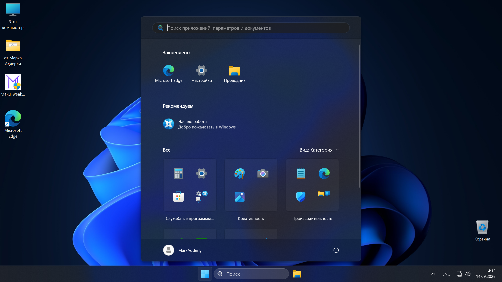
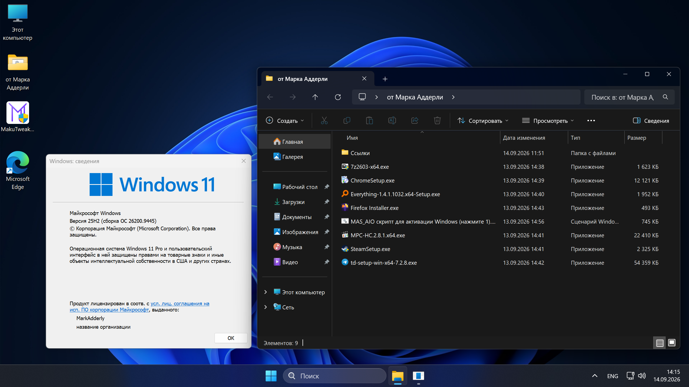
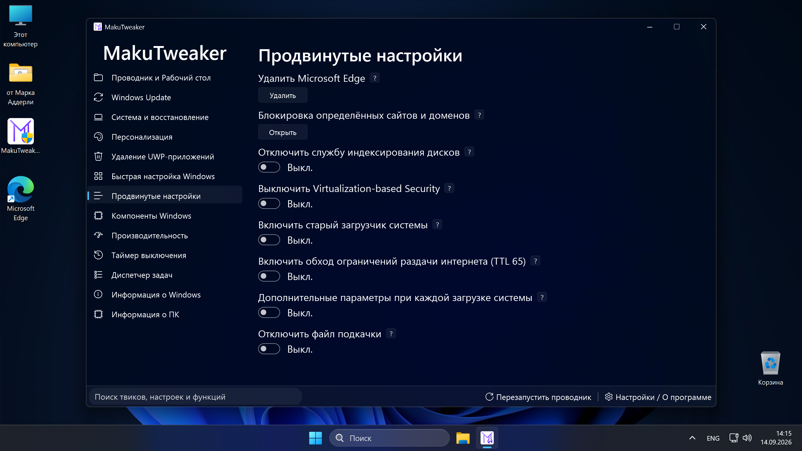
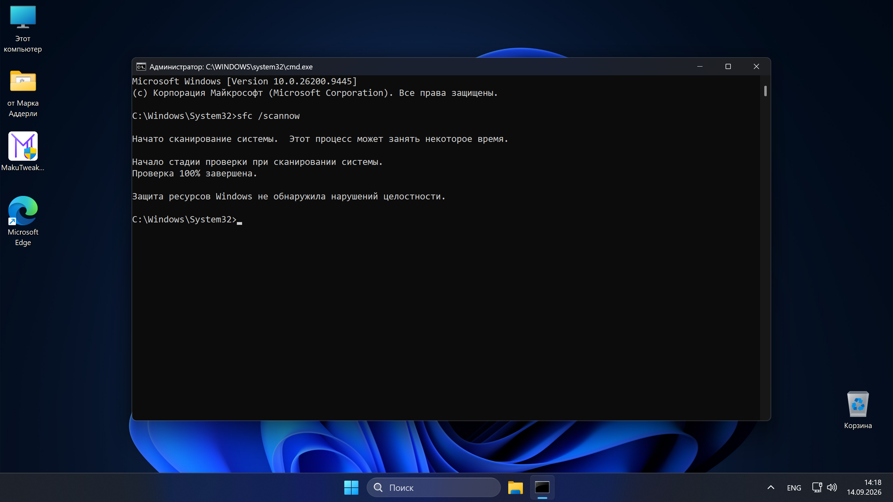

Adderly.Top
Adderly.Top
MakuOS 11 25H2
(Windows 11 25H2 26200.9445)
Windows Defender и Центр обновлений работает // Pro редакция // Русский язык




Изменения в сборке
- Отключена проверка совместимости (TPM 2.0, процессор, Secure Boot).
- Отключено требование подключения к интернету и наличия аккаунта Microsoft при установке.
- Установлены обновления по 14 сентября 2026 года.
- На рабочем столе находится папка от Марка Аддерли, в которой лежат активатор системы и полезные установщики:
Google Chrome, Firefox, 7-Zip, MPC-HC, Telegram, Zapret, Steam, Everything.
Там же на рабочем столе расположена портативная версия MakuTweaker, с помощью которой можно применить различные твики, активировать систему, а также очень гибко и подробно её настроить.
Применённые настройки
- По умолчанию открывается "Этот ПК" вместо "Главная".
- Добавлена кнопка "Завершить задачу" на панели задач.
- Включены скрытые файлы, папки и диски.
- Включены расширения файлов.
- Включена иконка "Этот Компьютер" на рабочем столе.
- Включён буфер обмена.
- Отключён весь мусор в меню "Пуск" и на панели задач.
- Отключён веб-поиск Bing в меню "Пуск".
- Отключён Windows Copilot.
- Отключено автошифрование диска с помощью BitLocker.
- Отключено залипание клавиш.
- Отключено автообновление UWP-приложений в Microsoft Store.
- Отключены виджеты.
- Отключена автоперезагрузка при синем экране смерти.
- Отключена различная телеметрия.
Удалённые приложения
Microsoft 365, Teams, Outlook, Copilot, Microsoft To Do, Skype, Cortana, Microsoft Карты, Microsoft Новости, Погода, Диктофон, Советы, OneNote, Sticky Notes, Microsoft People, OneDrive, Почта, Feedback Hub, Календарь, Часы, Кино и ТВ, Медиаплеер, Clipchamp, Dev Home, Power Automate, Quick Assist, Microsoft Solitaire Collection.